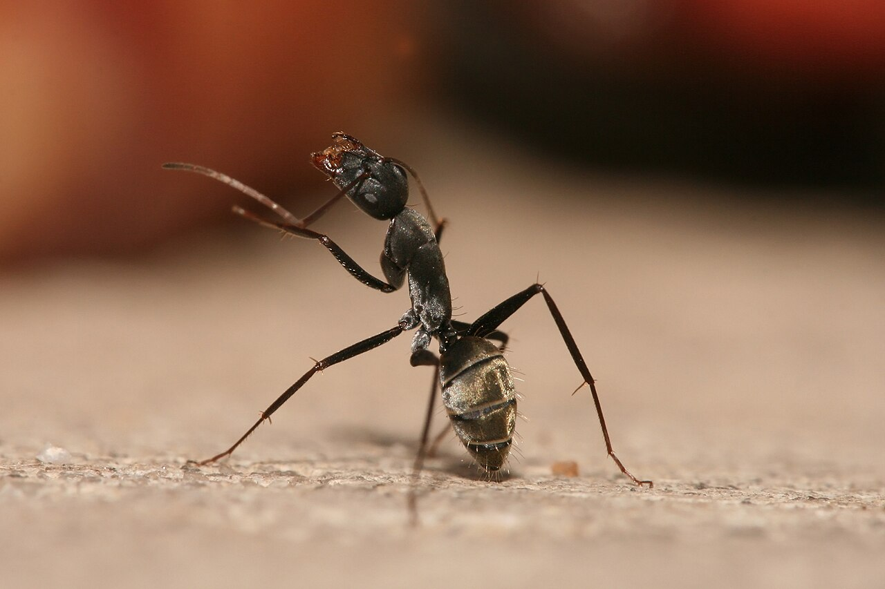
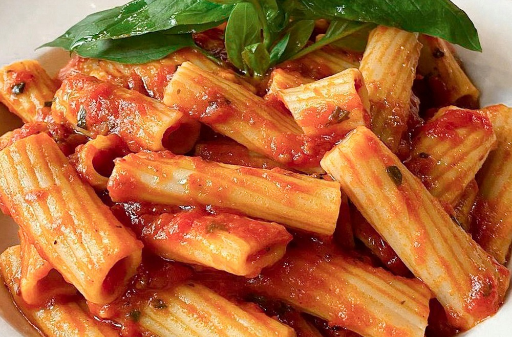

Photography
Photography is my biggest passion. I love capturing moments in nature and in the city. I started with a basic smartphone camera and have since upgraded to a DSLR camera.
Shooting in golden hour light is my favourite thing to do.

Click image for full size view
Steps to Take a Great Photo
- Choose your subject carefully
- Find good natural lighting
- Compose using the rule of thirds
- Adjust your camera settings
- Review and edit your shots
Gaming
I enjoy strategy games and open-world adventures. Gaming helps me relax and also challenges my problem-solving skills.
My Favourite Game Genres
- Strategy & city-building
- Open-world RPG
- Puzzle games
- Multiplayer games
Cooking
Cooking lets me be creative. I especially enjoy making Italian dishes and experimenting with spices. My best recipe so far is a homemade tomato pasta.
Find great recipes at: BBC Good Food

Click image to visit a pasta recipe